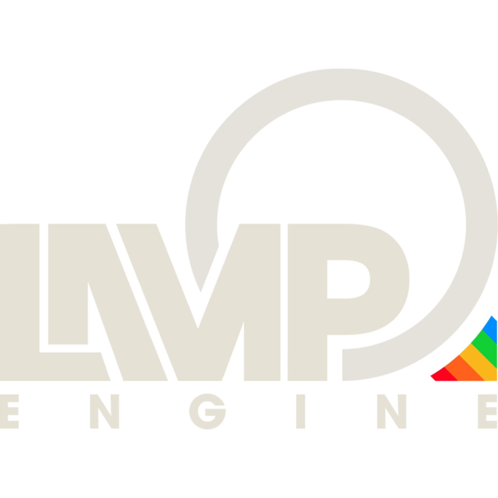

Team Project • The Game Assembly
Spite
A Diablo-style action RPG built in our custom C++ engine (Lamp Engine), where I worked mainly on enemy AI and data-driven enemy behavior.
Gameplay Programmer
Team Project
Enemy AI, Gameplay Systems
Lamp Engine / C++
Enemy AI & State Machine
My main focus was the popcorn enemy, built using a state machine.
It switches between idle, chase, shoot, flee, stunned, and dead states depending on distance, cooldowns, and player interaction.
The enemy doesn’t flee all the time. It uses a timer and cooldown, so it only backs off in certain situations.
Movement is handled through a NavMesh system together with steering, so the enemy can move through the level and react to the player.
I also hooked everything up with animations, hit reactions, and combat feedback so the behavior feels responsive in-game.
Enemy navigating towards the player using NavMesh pathfinding
Enemy stopping and attacking from range
Enemy temporarily retreating when the player gets too close
Enemies becoming temporarily stunned
Engine & Systems
The project was built in our custom C++ engine, Lamp Engine.
I implemented a reusable HealthComponent used across enemies, handling damage, healing, and communication through the engine’s event system.
I also implemented an input mapper with JSON-based key bindings, mapping actions to keys instead of hardcoding input.
It supports multiple bindings per action, key combinations, and different input states (pressed, held, released).
Because it’s data-driven, input could be changed without modifying code.

Lamp Engine, our custom C++ game engine used for the project.
Data-Driven Enemies
Enemy values like range, speed, damage, and behaviour settings were defined in Unreal and exported as JSON, then loaded into the engine through our level loader.
The loader reads custom enemy components and maps their values into init data for each enemy type, so things like aggro range, attack range, health, movement speed, and projectile values could be changed without hardcoding them directly in the enemy classes.
This made it easier to tune enemies and iterate on behaviour without having to rework the gameplay code every time a value changed.
I also created enemy dummy components that we mainly used in our gyms to test animations and basic behaviour in a simpler setup.
Takeaway
This project gave me a better understanding of how AI behavior, combat, and underlying systems connect and affect each other in a real game.